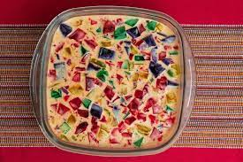
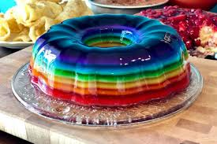

Gelatina Colorida

Esta receita vai bem em qualquer situação, além de ser saudável!
"Tenho que preparar uma receita pra festa de amanhã mas não queria fazer pudim de novo..."-Aline Mika
Rendimento: 8 pessoas
Lista de Ingredientes:
- 1 pacote de geltina de morango (Vermelho)
- 1 pacote de gelatina de limão(Verde)
- 1 pacote de gelatina de franboesa(Azul)
- 1 pacote de gelatina de maracujá ou abacaxi (Amarelo)
- 1 lata de creme de leite
- 1 pacote de gelatina incolor
Lista de Utensílios:
- Refratário (de preferência transparente)
- 4 potes pequenos
Instrução 1:Gelatina Mosaico (ilustração)
- Prepare a gelatina Verde com 150 ml de água quente e dissolva bem. Misture outros 150 ml de água fria e Mexa. Reserve num pequeno pote
- Prepare a gelatina Amarela com 150 ml de água quente e dissolva bem. Misture outros 150 ml de água fria e Mexa. Reserve num pequeno pote
- Prepare a gelatina Vermelha com 150 ml de água quente e dissolva bem. Misture outros 150 ml de água fria e Mexa. Reserve num pequeno pote
- Prepare a gelatina Azul com 150 ml de água quente e dissolva bem. Misture outros 150 ml de água fria e Mexa. Reserve num pequeno pote
- Após firmes, cortes todas as gelatinas em cubos e as despeje num refratário de sua preferência
- Em outro recipiente junte o creme de leite e adicione a gelatinha incolor hidratada. Mexa bem e certifique-se de que não há gruminhos de gelatina no creme.
Despeje a mistura no refratário das gelatinas e aguarde endurecer
- Sirva gelada

Instrução 2: Gelatina em Camadas
- Prepare a gelatina verde com 150 ml de água fervente. Dissolva bem. Despeje outros 150 ml de água fria e mexa.
Reserve na geladeira até que endureça
- Prepare a gelatina amarela da mesma forma que a verde. Desepeje no mesmo refratário e aguarde edurecer
- Prepare a gelatina vermelha da mesma forma que a verde. Despeje no mesmo refratário e aguarde endurecer
- Prepare a gelatina azul da mesma forma que a verde. Desepeje no refratário e aguarde endurecer
- Em outro recipiente junte o creme de leite e adicione a gelatinha incolor hidratada. Mexa bem e certifique-se de que não há gruminhos de gelatina no creme.
Despeje a mistura no refratário da gelatina e aguarde endurecer
- Sirva gelada
Voltar ao Menu